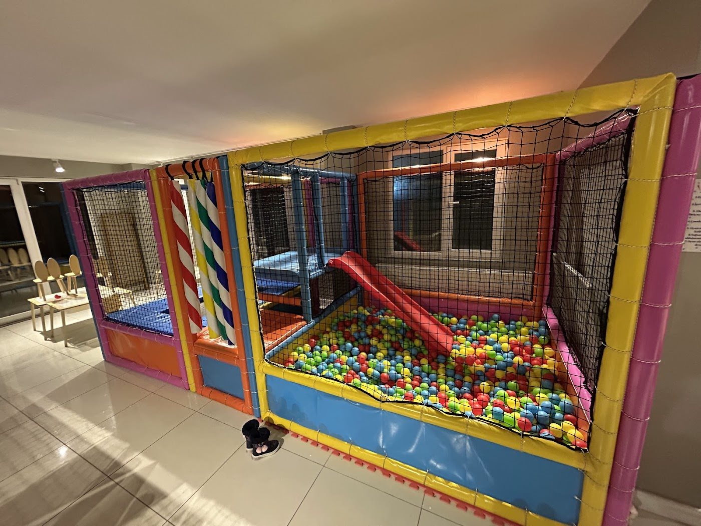
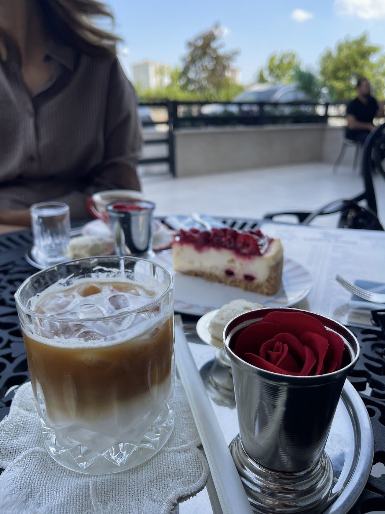

Kum alanı
Küçük eller için kazılacak, taşınacak ve keşfedilecek bir dünya.
Adnan Kahveci, Beylikdüzü
Birlikte dışarı çıkmanın keyfi. Çocuklar oyun alanlarını keşfederken siz de kahvenize zaman ayırın.

Küçük keşifler
Top havuzu, kum alanı ve oyuncaklarla dolu bir mola. Ziyaretiniz öncesinde yaşa uygun alanları ve güncel kullanım koşullarını bize sorabilirsiniz.
Küçük eller için kazılacak, taşınacak ve keşfedilecek bir dünya.
Oyuncaklar ve küçük masalarla hayal gücüne ayrılan bir köşe.

Bu mola sizin de
Oyunla geçen bir güne kahve ve tatlı eşlik etsin. Birlikte geldiğiniz arkadaşlarınızla masada buluşun.
Güncel menü seçenekleri, fiyatlar ve içerik bilgileri için bizi arayabilirsiniz.
Kafe hakkında bilgi alınYola çıkmadan önce
Yaş grubu, oyun süresi ve ücret gibi bilgileri ziyaret öncesinde netleştirelim.
Çocuğunuzun yaşını bizimle paylaşın. Kullanabileceği alanlar ve güncel katılım koşulları hakkında bilgi alın.
Güncel süre ve ücret bilgisini telefonla öğrenebilirsiniz. Ziyaret edeceğiniz gün için ayrıntıları önceden netleştirmenizi öneririz.
Güncel çalışma saatleri ve yoğunluk için bizi arayabilirsiniz. Özellikle bir grupla gelecekseniz kişi sayısını ve planladığınız saati paylaşın.
Ebeveyn eşliği, oyun alanının kullanım kuralları ve personelin destek kapsamını ziyaretinizden önce işletmemizden öğrenebilirsiniz.
Google yorumları
Tatlıları ve kahveleri de çok lezzetliydi.
Keşfettiğimden beri her hafta geliyoruz. Tüm çalışanlar güler yüzlü.
Harika bir yer, çocuğumuz çok güzel vakit geçirdi. Çocuk ablaları çok ilgili.
Yorumlardan kısa alıntılar. Yazım ve noktalama düzenlenmiştir.
Google’da inceleyinAilece bir plan yapalım
Ziyaret, menü ve oyun alanları hakkında bilgi almak için bize ulaşın.
Bizi arayın